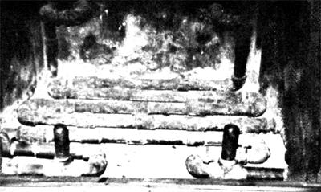

The grate in Lyman D. Schwartz's fireplace is actually a network of pipes. When water is circulated through the plumbing, it picks up heat that would ordinarily be lost . . . and carries that warmth to other parts of the Schwartz home and TV shop.
My fireplace saves me money four ways: (1) It keeps my living room and kitchen warm, (2) it provides "hot water" baseboard heat for my TV shop, and (3) it preheats water for my electric water heater, which (4) thereby provides my family with a for greater supply of hot water to use ... without costing us a penny extra!
We pretty much run our fireplace day and night during the winter, and-with heating costs as high as they are today-I hated to see all that warmth going up the chimney. So, I set out to do something about using some of the "wasted" heat.
The solution that I came up with is inexpensive, fairly simple to put together, and darned effective, too! 1 built a fireplace grate out of 1" (internal diameter) black pipe and then ran water-from a 75-gallon storage tank through the grate and right under the glowing coals. The system uses an electric circulator, which runs continuously while the fireplace Is in use. I also Installed a backup circulator-powered by a standard 12-volt auto battery-that kicks 1n automatically if the electricity goes off . . . as it frequently does during our Gettysburg, Pennsylvania winters.
This setup gives me approximately 80 gallons of hot water, which I feed through another circulator-into 55 feet of baseboard heater in my hard-to-warm, north-facing, 20' X 34' TV shop ... and into another 10 feet of baseboard that runs along our home's central hallway.
The kitchen and living room get their heat from the well-insulated, blower equipped, "Heatilator" fireplace Itself, and the bedroom stays at a comfort. able-for-sleeping 58° to 80°F with no heat other than the overflow from the other rooms. To keep the house cozy all night long, I fill up the fireplace once before I go to bed . . . and again between 2:30 and 3:00 a.m. My standard hot-air furnace will, of course, come on if things get too chilly in the wee hours, but the house hardly ever gets cold enough to make that extra (more expensive) heat necessary.
I also installed a thermocouple and a pyrometer heat meter in my system, so I'd be able to check the temperature of my "stored" water at any time. The meter is capable of reading up to 250°F, and my storage tank's water averages around 130 degrees. (I've actually gotten it as high as 195 degrees on several occasions, but that requires one heck of a hot flre!)
Once I had this whole system worked out and was telling myself how good it was, I got another brainstorm. "You dummy," I said to myself, "you've got 80 gallons of hot water on hand just about all winter long. Why not put two domestic heating coils in that 75-gallon storage tank and preheat the water for your electric water heater?" Well, I did just that, and I'm plenty pleased with the results. Whether the water in our "fireplace" tank is 150 degrees or 100, we still get the benefit of that bonus heat. This means that the electric water heater doesn't have to run as much, because the water that flows into the appliance has already been warmed on Its way through the heating coils in my storage tank.
And just how well does my fireplace-powered system work? Well enough to heat my 34' X 70' house/ shop combination all winter long with only 110 gallons of fuel oil and 11 cords of wood. That's not bad, especially when you consider that an average winter-here in our part of Pennsylvaniameans outside temperatures that stay down around twenty degrees Fahrenheit for months on end!
|
 |
|
|